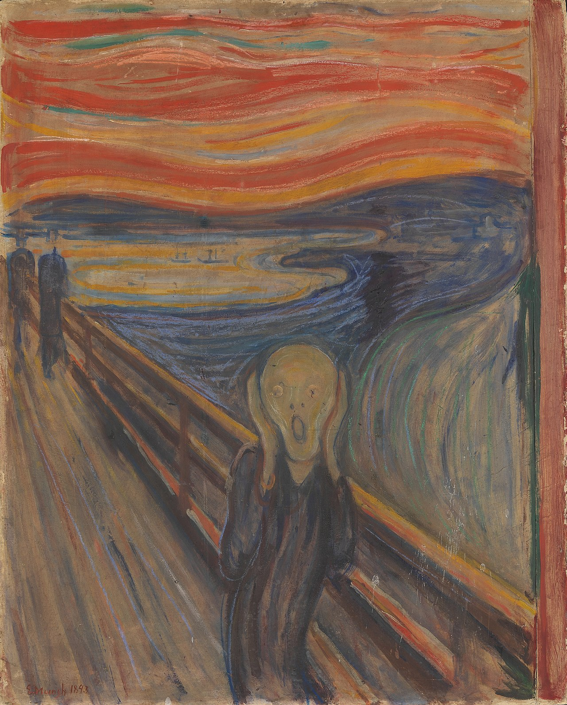
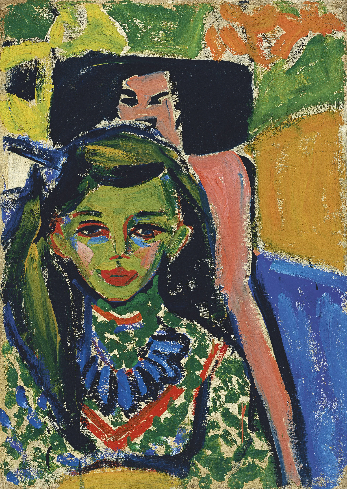
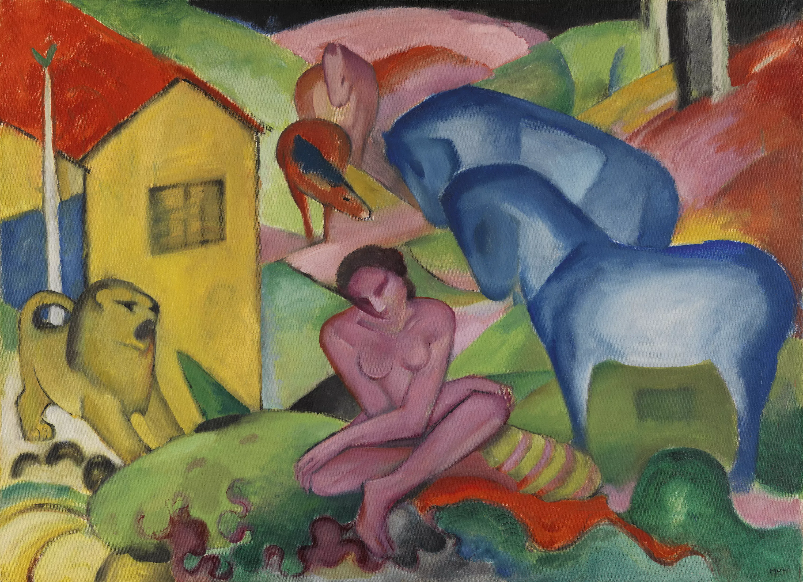
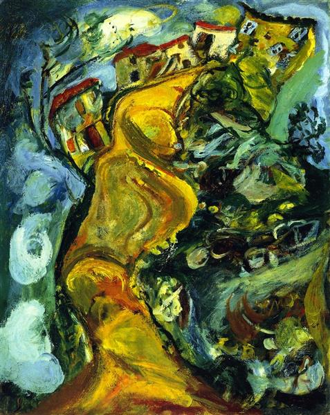

Expressionism
Expressionism is a modernist movement, initially in poetry and painting, originating in Northern Europe around the beginning of the 20th century. Its typical trait is to present the world solely from a subjective perspective, distorting it radically for emotional effect in order to evoke moods or ideas.




Expressionism developed as an avant-garde style before the First World War. It remained popular during the Weimar Republic,[1] particularly in Berlin. The style extended to a wide range of the arts, including expressionist architecture, painting, literature, theatre, dance, film and music. . The Expressionist emphasis on individual and subjective perspective has been characterized as a reaction to positivism and other artistic styles such as Naturalism and Impressionism.
continue your journey:
part nine
Simple Div Link
Learn more about Expressionism here